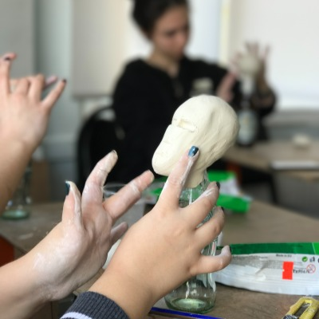
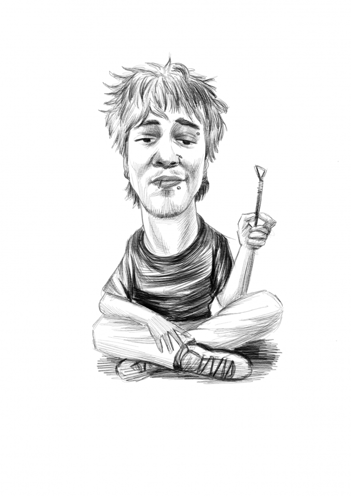

Yurt dışı sanat okullarına portfolyonu Bakırköy'de birlikte kur
Bakırköy'ün 2008'den beri köklü sanat atölyesinde, Mimar Sinan mezunu eğitmenlerle her okulun kendine özgü portfolyo kriterlerine göre birebir hazırlık ve başvuru rehberliği. RISD, Parsons, Central Saint Martins yolunda; okul seçiminden SlideRoom yüklemesine kadar tüm süreci yanında yönetiyoruz.

- Süre
- Kişiye özel · 3–12 ay
- Format
- Birebir + küçük grup
- Kapsam
- Okul seçimi → SlideRoom
- Seviye
- Lise son/mezun · BFA & MFA
- Hedef Okullar
- RISD · Parsons · CSM
- Ücret
- Kapsama göre kişiye özel
Bu program sana göre mi?
Lisans (BFA) hedefleyen lise öğrencisi
RISD, Parsons ya da CSM gibi okullara başvuracak; portfolyosunu sıfırdan ya da mevcut işleriyle kurmak isteyen aday.
Yüksek lisans (MFA) adayı
Üniversite mezunu ya da çalışan; portfolyosunu uluslararası jüri standardına taşımak isteyen aday.
Süreci bilmeyen aday
Elinde çalışması var ama hangi okula ne göndereceğini, deadline'ları ve statement'ı yönetecek bir rehber arıyor.
Transfer / çift diploma düşünen öğrenci
Türkiye'de güzel sanatlar okuyup yurt dışına transfer ya da çift diploma programına yönelmek isteyenler.
"Yeteneğim yok ya da geç kaldım" diye düşünüyorsan — güçlü portfolyo doğuştan değil, gözlemsel çizim temeliyle doğru takvimde kurulur.
Okula özel yol haritası
Her okul farklı bir şey ister — biz portfolyonu tek bir kalıba değil, başvuracağın her okula göre ayrı kurgularız. Önce okul kriterleri, sonra adım adım üretim.
RISD
12–20 arası çalışma, her medyum; fotoğraf veya hayalden değil doğrudan gözlemden yapılmış çizim özellikle önerilir. Common Application üzerinden SlideRoom'a yüklenir.
Parsons
8–12 görsel; çizim, resim, heykel, moda, animasyon, grafik ve eskiz defteri sayfaları gibi geniş medya yelpazesi. Teknik ve kavramsal beceri birlikte, deneysellik ve çeşitlilik beklenir.
Central Saint Martins
Cilalı beceriden çok fikir, deney ve süreç önemsenir; eskiz defteri ve projeyi tüm aşamalarıyla geliştirip üzerine düşünme aranır. Foundation Diploma yaygın giriş yoludur.
Tanışma & hedef belirleme
Okul/bölüm listesi, güçlü-zayıf analizi ve gerçekçi bir takvim.
Temel & gözlemsel çizim
Çizgi, form, ışık-gölge, perspektif; RISD'in özellikle istediği gözlemden çizim temeli.
Kavram & tema geliştirme
Kişisel görsel dil, proje fikirleri ve seri kurgusu.
Medya genişletme
Resim, suluboya, kolaj, dijital, üç boyutlu ve deneysel işler — Parsons'ın aradığı çeşitlilik.
Eskiz defteri & süreç
Fikrin gelişimini gösteren defter — CSM'in en önemsediği katman.
★ Seçki & kürasyon (okula özel)
Her okul için doğru 8–20 çalışmayı ayrı ayrı seçme ve jüri gözüyle sıralama — bizim asıl kozumuz.
Statement of Purpose & İngilizce metin
Kişisel yazı ve başvuru metinlerinde içerik ve dil rehberliği.
Fotoğraflama & SlideRoom yükleme
Profesyonel fotoğraflama ve her okulun sistemine eksiksiz yükleme.
Mülakat / portfolyo sunum provası
Portfolyonu anlatma ve mülakat için gerçekçi prova ve geri bildirim.
Süreci içeriden bilen bir kadro
2008'den Beri 18 Yıl
Bakırköy'ün en köklü sanat atölyelerinden; oturmuş, güvenilir bir kurum.
MEB Onaylı Kurum
Resmi ruhsatlı, denetlenen özel öğretim kurumu — güvenle başlarsın.
Mimar Sinan Kadrosu
Alanında mezun, sanat eğitiminin içinden gelen deneyimli eğitmenler.
Gözlemsel Çizim Gücü
RISD gibi okulların özellikle istediği, doğrudan gözlemden çizim temelimiz.
Okula Özel Kurgu
Tek portfolyo değil; RISD, Parsons ve CSM'in ayrı kriterlerine göre ayrı hazırlık.
Tam Süreç Yönetimi
Deadline takibi, Statement of Purpose, İngilizce metin ve SlideRoom yüklemesi dahil uçtan uca rehberlik.
Böyle bir portfolyo çıkıyor
Kimlerle çalışacaksın

Mimar Sinan Üniversitesi mezunu danışman & eğitmenler
Atölyemiz, Mimar Sinan Güzel Sanatlar Üniversitesi mezunu eğitmenler tarafından kuruldu. Kadromuz gözlemsel çizim temelini birinci elden aktarır; portfolyo üretiminden Statement of Purpose ve SlideRoom yüklemesine kadar başvuru sürecinin her aşamasında sana eşlik eder. MEB onaylı bir kurumda, alanında mezun eğitmenler ve gerçek başvuru süreci deneyimiyle yanındayız.
Ön değerlendirmeden gönderime
Ücretsiz Ön Değerlendirme
Mevcut çalışmalarını ve hedef okulunu birlikte değerlendiririz.
Okul Listesi & Takvim
Deadline geriye sayımıyla (erken ~Kasım, normal ~Ocak) kişiye özel program çıkarırız.
Üretim
Portfolyo çalışmaları, eskiz defteri ve Statement of Purpose'u birlikte hazırlarız.
Seçki, Prova & Gönderim
Okula özel seçki, profesyonel fotoğraflama, SlideRoom yüklemesi, mülakat provası ve sonuç takibi.
Deneyimler şeffafça paylaşılıyor
Öğrencilerimizin ve velilerimizin gerçek yorumlarını Instagram ve Google üzerinden açıkça paylaşıyoruz. En doğrusu ise atölyeyi ve öğrenci çalışmalarını kendi gözünle görmek — ücretsiz deneme dersine bekleriz.
Adaylarımız bunları merak ediyor
RISD, Parsons (New York ve Paris), Central Saint Martins / UAL, Pratt, SCAD gibi önde gelen sanat-tasarım okullarının hem lisans (BFA/Foundation) hem yüksek lisans (MFA) programlarına hazırlık yapıyoruz. Her okulun kendine özgü kriteri olduğu için portfolyonu başvuracağın okullara göre ayrı ayrı kurguluyoruz. Hedef okulunu ücretsiz ön değerlendirmede birlikte netleştiriyoruz.
Hayır, okullar farklı ister. RISD genellikle 12–20 çalışma ve özellikle gözlemden yapılmış çizim-resim önerir; Parsons 8–12 görselle geniş medya çeşitliliği ve deneysellik bekler; Central Saint Martins ise cilalı beceriden çok fikir gelişimini ve eskiz defterini önemser. Biz her okul için doğru sayıda ve doğru türde çalışmayı birlikte seçip sıralıyoruz.
Çoğu durumda evet. Güçlü bir portfolyo doğuştan gelen bir yetenek değil, doğru temel ve takvim işidir. Gözlemsel çizim temelinden başlıyoruz ve senin hızına göre program çıkarıyoruz. İdeal olarak başvuru deadline'ına 6–9 ay kala başlamak rahat bir üretim sağlar; daha kısa sürede yoğun program da mümkün.
Portfolyo tek parça değil. Genelde Statement of Purpose / kişisel yazı, İngilizce yeterlilik belgesi (TOEFL, IELTS veya Duolingo), transkript ve çoğu okulda tavsiye mektubu istenir; RISD gibi okullar başvuruyu Common Application üzerinden SlideRoom'a yükletir. Biz yazı ve İngilizce metin rehberliğinden SlideRoom yüklemesine kadar tüm süreci yönetiyoruz.
Süre hedefine ve mevcut çalışmalarına göre değişir; tipik olarak 3 ila 9–12 ay arasında ilerler. Başvuru takvimleri erken dönem için genelde Kasım, normal dönem için Ocak civarındadır. Deadline'a en az 6 ay kala başlamak hem portfolyoyu hem yazıları rahatça olgunlaştırmak için idealdir. Ücretsiz ön görüşmede sana özel bir geri sayım takvimi çıkarıyoruz.
Ücret; hedeflediğin okul sayısına, sürece ve kapsama göre kişiye özeldir ve ücretsiz ön değerlendirmede netleşir. Kabul garantisi vermiyoruz — bunu vaat eden hiçbir kuruma güvenme. Bizim işimiz, kabul şansını en yükseğe taşıyacak portfolyoyu ve eksiksiz başvuruyu seninle birlikte kurmak.
Yurt dışı portfolyo için ücretsiz ön değerlendirme
Formu doldurun, genellikle aynı gün dönüş yapalım. Hedef okulunuzu ve mevcut portfolyo durumunuzu konuşup size özel bir yol haritası çıkaralım.